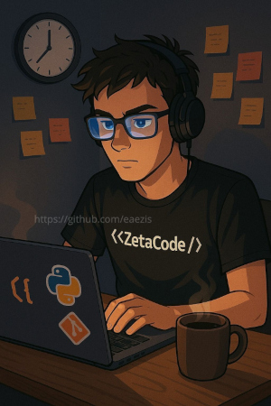

Neste desafio você deve colocar o fav com e adicionar uma imagem de sua preferência

ZetaCode é o alter ego do Zis no mundo da programação. Curioso, metódico e sempre em busca de clareza no código, ele é o tipo de dev que prefere aprender na prática, linha por linha. Com um foco especial em criar soluções úteis — como apps para saúde e acessibilidade — ZetaCode quer transformar ideias em produtos reais.